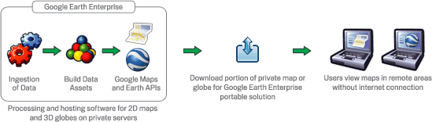

Portable Globe and Server 5.2¶
- Overview
- Installation
- Creating a portable globe
- Portable server
- Connecting to a portable globe
- Command line reference
Overview
The Google Earth Enterprise Portable Server solution enables organizations to access portions of their custom globes in the field when no network access may be available or possible. Using a web interface, end users may select an area of interest to download from a Google Earth Enterprise Server for offline use on their Linux or Windows laptop with the Portable Server application.
All data available within a specified area of interest is downloaded and stored in a portable globe, including all high-resolution imagery, terrain, vector data, KML files, and searchable Point of Interest (POI) locations. Outside of the specified area of interest, only low resolution imagery and terrain will be stored in a portable globe. These levels of resolution can be specified when the globe is cut.
Portable globes may be specified, generated, and downloaded in as little as a few minutes — depending on the area of coverage — to support rapid preparation for first responders. Larger globes may be built in advanced preparation for responders to have ready on the shelf.

The Portable Server solution is made up of two applications:
- The globe cutter tool, which is installed on a production Google Earth Enterprise Server system hosting a 3D database. This tool allows end-users and administrators to select, package, and download a portion of the 3D Earth as a portable globe file.
- The portable server is installed on Linux or Windows machines in the field. It can operate in a single-user mode for complete offline usage by one user, or can broadcast a portable globe so that multiple Portable Server users, and/or mobile users with compatible Android-based smart phones, can view the same globe.
Note
The Portable Server solution can also create portable maps from a 2D map source. This document uses the term portable globe only, but instructions apply to both globes and maps.
Installation
This section describes installation of the two applications that make up the Portable Server solution.
Globe cutter installation
The portable globe cutter tool is installed with Google Earth
Enterprise Server Open Source. Globe cutting is disabled by
default; to enable it you must set the --enable_cutter flag
for geserveradmin from the command line:
# geserveradmin --enable_cutter
By default, the cut globes will be stored in the
/opt/google/gehttpd/htdocs/cutter/globes directory. The cut
globes can be large, and many servers do not have sufficient
storage allocated in this directory for multiple globes. If this
is the case for your server, you may consider designating a
different directory as the storage area for the cut globes.
Portable globe server installation
The portable server is supported on:
- Linux distributions Cent OS 7, RHEL 7, Ubuntu 14, Ubuntu 16
- Windows 7 and 10
Refer to the Portable Server Wiki page for build and install instructions.
Creating a portable globe
Cutting a globe is accomplished with a simple web interface. You will use your mouse, or import a KML, to define a polygon, which defines your ‘area of interest.’ This polygon not only defines the area that will display high-resolution imagery, but is also used by Fusion to create a localized search database.
Note
The globe cutting processes are CPU and disk intensive, as they are retrieving all data within the specified polygon from the Earth Enterprise Server. This can affect the overall performance of the Server, including slowing end-user access.
To mitigate performance impact to end users, you may consider:
- Limiting the number of users with access to globe cutting.
- Creating pre-cut portable globes to host as downloadable files for portable users.
- Operating a separate GEE Server specifically to support on-demand globe cutting needs.
Before you begin
Enable the cutter
Before cutting a globe, you must enable the cutter from the command line:
# geserveradmin --enable_cutter
Note
About authentication and SSL: Cutting is not currently supported on globes that require end-user authentication, e.g., LDAP. One workaround is to allow unauthenticated access from localhost on your Earth Enterprise Server. Refer to Apache documentation to enable such a configuration. Cutting a globe over HTTPS is supported; however the SSL certificate of the target server will not be verified during cuting.
The globe cutter interface
To create a portable globe, point your browser to
http://yourserver/cutter, where yourserver is the server
on which Earth Enterprise Server is running. The Globe Creator
page appears.

Select the globe you wish to cut your portable version from in the drop-down menu.
Note
Additional options can be shown by clicking on the Advanced button after a cut region has been selected. These options are, namely, Polygon level. This setting is useful when cutting with large polygons, e.g., use 12 for a country-sized polygon and 18 for a city-sized polygon. Additional advanced settings may be offered in future versions. Use caution when changing them as they may dramatically increase build times and globe sizes.
Globe name
The globe name defines the file name of this globe; it will be
created as a .glb file, which is a single-file format for
sharing Google Earth Enterprise globes. Spaces, slashes, and
double dots (..) will be converted to underscores in the saved
globe name.
We recommend using a descriptive name for each globe, so that others will know what geographic area, or what mission, the globe was created for.
Note
Building a globe will overwrite any existing globes with the same name. If multiple users are cutting globes, we recommend assigning unique prefixes to each user for their globe names to ensure that files are not accidentally overwritten.
Drawing the polygon
Once the globe name has been specified, you can define the geographic region to be cut by drawing a polygon on the globe. There are two ways to draw the polygon, one of which has been deprecated.
Defining the polygon with KML
You can use a KML to define the polygon(s). The KML should be
complete, and may contain single or multiple
<polygon> </polygon> elements. To insert your KML:
- Select the Enter polygon as KML checkbox.
- Paste your KML into the text field.
- Click outside of the text field. Your polygon appears on the map, if you are running the deprecated Google Earth plug-in.
Hand drawing the polygon
This method is only available if you are have the deprecated Google Earth plug-in running in your browser.
First, using the navigation controls in the plugin, zoom in to the region of interest. To use your mouse to define the polygon, click the polygon icon in the globe window.
Then, click the globe to define each point. You can use the navigation controls on the right to move the globe or change zoom levels while drawing.
Double-click the final point to complete the polygon selection, at which point the polygon will change from blue to purple.
You can view the KML of the shape you have drawn by selecting the Enter polygon as KML checkbox.
Globe resolution
The polygon you specified in the previous step defines your ‘area of interest.’ This area will contain high-resolution imagery and data, and search tabs will be created for information that lies within this zone. The maximum and minimum resolutions are specified as integers between 1 and 24. These correspond to the zoom levels that are used in the Fusion server.
Minimum resolution
The zoom level for the polygon area is specified in the Maximum resolution to extract field.
A minimum zoom level of 5-7 will present a decent-looking world to
the user and will most likely include vector layers such as
international boundaries and state boundaries and main cities
without affecting the size of the .glb file very much. For
example:
- A cut globe with minimum and maximum resolution values set to 5 is 10 MB.
- A cut globe with minimum and maximum resolution values set to 6 is 41 MB.
- A cut globe with minimum and maximum resolution values set to 7 is 120 MB.
These numbers are small in comparison to the overall size of your globe when a suitable maximum resolution has been selected. For example, a globe that contains all of the city of Atlanta, GA, USA in 1-foot resolution requires approximately 5 GB of storage. Even level 7 imagery, at 120 MB, is a small percentage of the overall globe size.
Maximum resolution
The area outside of the defined polygon will be included in the globe at a lower resolution, which is defined within the Minimum resolution to extract field. Areas near the polygon may be included at a higher resolution.
The maximum resolution of the cut globe will be no higher than the maximum resolution of the source globe. For example, if the maximum resolution in the cutter is specified at 24, but the source imagery is at 18 (approximately 1-meter resolution), the cut globe will contain level 18 imagery. You can leave this field blank to use the highest available imagery.
You may enter a lower number to reduce the size of your globe, by not including the highest resolution imagery.
Building the globe
Click Build to start the build process. Depending on the size of your polygon, this can take from a few minutes to a few hours; likewise, file size will vary widely depending on the area selected and the desired resolution.
When the build is finished, a .glb file is created and a
download link appears to the file’s location on the Earth Server.
Save the file into the <portable-server-unpack-directory>/data
directory with the other .glb files. Alternately, the globe
file can be copied onto portable media like a DVD, thumb drive, or
external hard drive to be delivered to users.
The .glb file contains all that you need to share your
portable globe — imagery, terrain, and vector assets, plus the
search database. For this reason, it is important to retain control
of your globe if it contains sensitive or proprietary information.
Search tabs
When a globe is cut, the search tabs associated with the globe are also bundled with the globe. However, because search plugins in Google Earth Enterprise run within the Tomcat / Apache instance on the Earth server, most search tabs will not work in a portable globe.
The Portable Server uses its own search framework that allows Python code stored on the portable machine to execute in place of the GEE plugin.
KML files
When a portable globe is cut from a source containing KML links in the Layer panel:
- KML files that are stored locally on the primary Earth Server will be bundled into the portable globe. Only the main KML file will be copied, not any links or files that are embedded as links in the main KML file. The default copy is not recursive.
- KML links that refer to servers other than the primary Earth Server are not copied. The layer will be visible in the client, but clicking the link will not cause any data to be displayed. If access to external servers is needed, a small KML file should be stored locally on the primary Earth Server. This KML file should contain a link to the intended external server.
These behaviors can be modified if the globe is built from the command line rather than from the GUI as described in the Command line reference section.
Historic Imagery
Historic Imagery is not supported in the portable globe as of Fusion 4.2.
There are, however, two situations in which historic imagery will be displayed:
- When the computer running the portable globe has a connection to the Earth server from which the globe was cut. In this case, historic imagery can be streamed from the Earth server. Once in the field, however, and disconnected from the Earth server, no historic imagery will be displayed.
- If historic imagery has been cached on the portable globe machine.
Otherwise, the following error message will appear:
Note
Google Earth cannot contact the imagery server to download new images.You will be able to see areas that you have been to recently, but new image areas may appear blurry.
Portable server
The portable server is a lightweight web server that runs on Linux
and Windows computers. The web server starts within seconds and
begins serving one of the globes that has been saved to the
data directory. Once the globe is served, it can be opened in
a web browser.
Serving a globe
Copy the globe to be served into the data subdirectory (or
whichever directory is specified as the globes_directory in
portable.cfg).
To start serving run the following command in the directory where you unpacked Portable Server:
python portable_server.pyNavigate to the Portable Server administrative page at
http://localhost:9335. If you have set a customportnumber inportable.cfg, substitute that for “9335”.
You can select what globe is being served from the administrative
page. Click the  folder icon and you
will see a screen where you can select what globe or map
should be served by Portable Server.
folder icon and you
will see a screen where you can select what globe or map
should be served by Portable Server.
You can shut down Portable Server from the administrative page, as
well. Click the  menu button,
then select Quit.
menu button,
then select Quit.
Broadcasting a globe
To share a globe with others on your network:
- Make sure
disable_broadcastingis set toFalsein yourportable.cfg. - If you are not already serving a globe, select the globe to serve from the Portable Server interface.
- On the Portable Server administrative page, click the
 Broadcast
icon.
Broadcast
icon.
Changing the globe being served
To change the globe being served:
- Point your browser to
http://localhost:9335. - Click the
 Folder button.
Folder button. - Select the new globe.
If you are accessing the globe with the Google Earth Enterprise
Client, log out of the client and log back in to
http://localhost:9335.
Connecting to a portable globe
It is possible to connect to a portable globe from a variety of platforms.
Google Earth EC
Launch the Google Earth EC client. When prompted for a server
address, enter http://localhost:9335. If you have changed the
default port in portable.cfg, use the new port value instead.
Google Earth API
The Google Earth Enterprise Portable Server comes with a
preconfigured HTML page that displays your globe using the Earth
API. The page relies on the discontinued Google Earth browser
plug-in to render globes, so it does not work in most recent
browsers. This page is at
http://localhost:9335/earth/earth_local.html.
If you wish to make your own custom Earth API application, make a copy of the included file from which to start.
You can also reach the page listed above by clicking view in
browser from the administration page at
http://localhost:9335.
Defining options in portable.cfg
The server directory under the Portable Server installation
directory contains the main configuration file, portable.cfg.
This file defines a number of options, but is primarily used to
change the port on which the globe is served, if required.
- port: the port on which to serve the globe. Default is 9335.
- globes_directory: the directory in which to look for globe files.
- globe_name: the default globe to serve when the server is started.
- fill_missing_map_tiles: If set to True, enables pixel-filling from ancestor map tile when there are no more tile descendents.
- max_missing_maps_tile_ancestor: Limit the pixelation to 2x by 2x sized pixels.
- local_override: If set to True, Portable Server looks for all files on the server first before seeking them on the globe.
Command line reference
The following command line tools are available for the portable globe and server.
Knowledge of these command line tools is not needed for most users and system administrators. The simple cutter interface that is provided should meet the needs of nearly all users. However, if finer control is needed or if the complete creation of globes needs to be automated, these command line tools are available. The following is the series of events for creating a globe to help give a sense of what these command line tools accomplish and in what order they are run:
Building LevelFive ...
No description given. Added globe directory:
/tmp/globe_builder/LevelFive_4282_1287494655.545115/LevelFive Ok
Saved polygon to
/tmp/globe_builder/LevelFive_4282_1287494655.545115/LevelFive/earth/polygon.kml
Convert polygon to quadtree nodes ...
Executing: /opt/google/bin/gepolygontoqtnodes --qt_nodes_file=/tmp/globe_builder/LevelFive_4282_1287494655.545115/qt_nodes.txt
--kml_polygon_file=/tmp/globe_builder/LevelFive_4282_1287494655.545115/LevelFive/earth/polygon.kml
--max_level=18
0 qtnodes Ok
Rewrite dbroot ...
Executing: /opt/google/bin/gerewritedbroot
--source=http://earth.localdomain/default_ge/
--icon_directory=/tmp/globe_builder/LevelFive_4282_1287494655.545115/LevelFive/icons
--dbroot_file=/tmp/globe_builder/LevelFive_4282_1287494655.545115/dbroot.v5
--search_server=localhost
--search_port=9335
--kml_server=localhost
--kml_port=9335
--kml_map_file=/tmp/globe_builder/LevelFive_4282_1287494655.545115/kml_map.txt
8 icons
Executing: cp
/tmp/globe_builder/LevelFive_4282_1287494655.545115/dbroot.v5
/tmp/globe_builder/LevelFive_4282_1287494655.545115/LevelFive/dbroot/dbroot_localhost_9335
Ok
Grab kml files ...
Executing: /opt/google/bin/gekmlgrabber
--kml_map_file=/tmp/globe_builder/LevelFive_4282_1287494655.545115/kml_map.txt
--output_directory=/tmp/globe_builder/LevelFive_4282_1287494655.545115/LevelFive/kml
--source=http://earth.localdomain/default_ge/
--kml_server=localhost
--kml_port=9335
0 kml files Ok
Build globe ...
Executing: /opt/google/bin/geportableglobebuilder
--source=http://earth.localdomain/default_ge/
--default_level=5
--max_level=5
--hires_qt_nodes_file=/tmp/globe_builder/LevelFive_4282_1287494655.545115/qt_nodes.txt
--metadata_file=/tmp/globe_builder/LevelFive_4282_1287494655.545115/earth/metadata.json
--globe_directory=/tmp/globe_builder/LevelFive_4282_1287494655.545115/LevelFive
--dbroot_file=/tmp/globe_builder/LevelFive_4282_1287494655.545115/dbroot.v5 >
/tmp/globe_builder/LevelFive_4282_1287494655.545115/packet_info.txt & Ok
685 image packets
128 terrain packets
515 vectors packets
Extract search data ...
Getting search poi ids:
http://earth.localdomain/cgi-bin/globe_cutter.py?
cmd=POI_IDS&db=default_ge
Getting search poi data:
http://earth.localdomain/cgi-bin/globe_cutter.py?
cmd=SEARCH_FILE&poi_id=&
polygon=Paste%20in%20KML%20containing%20polygon.%20If%20KML%20contains%20more
%20than%20one%20polygon%2C%20the%20first%20polygon%20will%20be%20used.
Saving search poi data:
/tmp/globe_builder/LevelFive_4282_1287494655.545115/LevelFive/search_db/gepoi_ Ok
Add plugin files ...
Executing: cp -r /opt/google/gehttpd/htdocs/cutter/template/earth/*
/tmp/globe_builder/LevelFive_4282_1287494655.545115/LevelFive/earth Executing: cp -r /opt/google/gehttpd/htdocs/cutter/template/maps/*
/tmp/globe_builder/LevelFive_4282_1287494655.545115/LevelFive/maps Executing: cp -r /opt/google/gehttpd/htdocs/cutter/template/js/*
/tmp/globe_builder/LevelFive_4282_1287494655.545115/LevelFive/js Rewrite JSON from: http://earth.localdomain/default_ge//query?request=Json&var=geeServerDefs Ok
Packaging globe for download ...
Executing: /opt/google/bin/geportableglobepacker
--globe_directory=/tmp/globe_builder/LevelFive_4282_1287494655.545115/LevelFive
--output=/opt/google/gehttpd/htdocs/cutter/globes/LevelFive.glb
Executing: chmod a+r /opt/google/gehttpd/htdocs/cutter/globes/LevelFive.glb
/opt/google/gehttpd/htdocs/cutter/globes/LevelFive.glb 9.62MB Ok
Deleting tmp directory as: /tmp/globe_builder/LevelFive_4282_1287494655.545115 Ok
This section uses the following typographic conventions:
| Italic | Information that the user must supply |
| Square brackets [ ] | Optional items |
gepolygontoqtnodes
Usage
- gepolygontoqtnodes --kml_polygon_file=filename
- --qt_nodes_file=filename --max_level=int
Description
Creates a list of the quadtree nodes that encompass a polygon at
the given max_level.
Required
| --kml_polygon_file=filename | KML file containing a polygon that defines the region of interest. |
| --qt_nodes_file=filename | File where quadtree addresses are stored. |
| --max_level=int | Level of resolution of quadtree that is used to encompass the polygon. |
gerewritedbroot
Usage
gerewritedbroot --source=server_name --icon_directory=directory --dbroot_file=filename --kml_map_file=filename [--search_service=search_service_url] [--preserve_search_service] [--kml_server=server_name] [--kml_port=num] [--kml_url_path=prefix] [--use_ssl_for_kml=bool] [--preserve_kml_filenames] [--disable_historical]
Description
- Reads dbRoot and rewrites the search tabs so that they point to the given search server, port, and path.
- Optionally creates a directory of all of the icons referred to by the dbroot.
- Optionally updates the host, path, and/or file names in KML Layer URLs in the dbRoot.
- Optionally creates a text file that lists the mapping from original KML Layer URLs to their updated file names.
- Optionally removes the reference to the server for historical imagery data.
Required
| --source=server_name | Server whose dbRoot should be rewritten. |
| --dbroot_file=filename | File where the new dbRoot should be stored. |
Options
| --icon_directory=directory | Directory where the icons should be stored. |
| --kml_map_file=filename | File where the KML map of source URLs to local files should be stored. |
| --search_service=search_service_url | URL to search service. If none is provided then uses relative URL for standard Portable search. |
| --preserve_search_service | Preserve the existing search service URL. |
| --kml_server=server_name | Server to be used for KML files in the dbRoot. Default is localhost. |
| --kml_port=num | Port to be used for KML files in the dbRoot. Default is 8888. |
| --kml_url_path=prefix | Path in new URL to prefix KML file name. Default is kml. |
| --use_ssl_for_kml=bool | Use https instead of http for accessing KML files. Default is false. |
| --preserve_kml_filenames | Preserve the existing file names of any KML files. Not used when creating portable globes. |
| --disable_historical | Remove the reference to the server to obtain historical data. |
gekmlgrabber
gekmlgrabber --kml_map_file=/tmp/kml_map
Usage
- gekmlgrabber --kml_map_file=filename --output_directory=path
- [--source=server_name] [--kml_server=server_name] [--kml_port=num*] [--kml_url_path=prefix] [--use_ssl_for_kml=bool] [--no_recurse=bool] [--ignore_absolute_urls=bool]
Description
Reads KML references, retrieves them from network, and copies them
into local files. If the --no_recurse flag is not set, it does
the same for any additional KML files referenced within the given
KML files.
Required
| --kml_map_file=filename | File where map of KML source URLs to local files are stored. |
| --output_directory=path | Directory where local KML files are to be stored. |
Options
| --source=server_name | Source for KML files. Default is localhost. |
| --kml_server=server_name | Server to be referenced in the dbroot for KML files. Default is localhost. |
| --kml_port=num | Port to be referenced in the dbroot for KML files. Default is 9335. |
| --kml_url_path=prefix | Path in new URL to prefix KML file name. Default is kml. |
| --use_ssl_for_kml=bool | Require https:// instead of http:// for accessing KML files. Default is false. |
| --no_recurse=bool | Do NOT make all KML files linked within the KML files local files as well. Default is false. |
| --ignore_absolute_urls=bool | If KML is linked with a full URL address (http://server/...), leave it as it is. Default is false. |
geportableglobebuilder
geportableglobebuilder --source=http://myserver --max_level=18 --default_level=8 --hires_qt_nodes_file=qt_nodes.txt --globe_directory /tmp/my_portable_globe
Usage
- geportableglobebuilder--source=server_name --globe_directory=path
- [--max_level=num] [--default_level=num] [--hires_qt_nodes_file=filename] [--dbroot_file=filename] [--nowrite]
Description
Creates a set of packet bundles and other associated files. These
files can be combined into a globe file with
geportableglobepacker.
Required
| --source=server_name | The source globe from which the sub-globe is to be derived. |
| --globe_directory=path | Directory where the portable globe should be built. |
Options
| --max_level=num | Level of resolution of the quadtree above which no packets should be saved. Default is 24. |
| --default_level=num | Level of resolution of the quadtree for which all packets are kept independent of the
region of interest. Default is 7. |
| --hires_qt_nodes_file=filename | Name of file containing the quadtree nodes that define the high-resolution area of the globe. Default is no file. |
| --dbroot_file=filename | Name of file containing the dbRoot that should be saved with the globe. Default is no file, in which case the dbRoot is read from the source. |
| --metadata_file=filename | Name of file containing boundary metadata that should be saved with the globe. Default is no file, in which case no metadata file is included. |
| --no_write | Do not write packets; print out the total size of the globe. |
geportableglobepacker
Usage
geportableglobepacker --globe_directory=path --output=filename [--make_copy=bool] [--is_2d=bool]
Description
Packs up all globe files into a single file. If --make_copy is
set to true, the globe directory is undisturbed. If not, then
the globe directory is rendered unusable, but the command can run
considerably faster.
Options
| --globe_directory=path | The directory containing the globes to be packed. |
| --output=filename | The file to which to save the packed globe, including a file path if desired.
The file name should use a .glb file extension. |
| --make_copy=bool | Make a copy of all files so that the globe directory is not disturbed. Default is false. |
| --is_2d=bool | Are we packaging a 2D map. Default is false. |